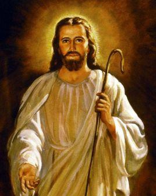

耶稣（Jeshua ben Joseph，公元前4年-公元33年或30年），基督宗教教义的中心人物，也是基督宗教的创始人。
耶稣是西元三十年左右生活于今巴勒斯坦一带的历史人物，接受施洗者约翰洗礼并且被罗马人钉死殉道在十字架上。之后第三天复活，显现给门徒看有四十天之久，然后升天，坐在天父的右边，叫信祂的人不至灭亡，反得永生。
玛代-波斯帝国灭亡迦勒底新巴比伦帝国后，允许以色列人返回犹大省定居，重建耶路撒冷和所罗门圣殿。亚历山大大帝灭亡玛代-波斯帝国后不久，以色列又沦为希腊化之叙利亚王国的殖民地。公元前2世纪末叶至公元前1世纪前叶，犹大支派的马加比家族带头反抗叙利亚国王践踏信仰自由和民族尊严的独裁暴政，以色列一度短期独立，后又被罗马共和国灭亡，沦为罗马帝国的殖民地。由于马加比家族虽属于犹大支派，但不是大卫王族，所以，犹太人一直盼望大卫王族兴起一位救星，成为复国中兴的民族英雄。
新生儿耶稣的生母玛利亚、养父约瑟、那些牧羊人和东方博学之士都宣称耶稣就是那位弥赛亚，这种传闻引起当时的犹太统治者大希律王的恐慌。当时以色列实行双轨统治，一方面派驻罗马总督，另一方面由以东人大希律作国王。以东人的祖先以东和以色列人的祖先以色列是孪生兄弟，他俩的父亲以撒和阿拉伯人的祖先以实马利是同父异母的兄弟，以实马利是亚伯拉罕的长子，以撒是亚伯拉罕的次子和嫡长子（《古兰经》称亚伯拉罕为易卜拉欣，称以实马利为易司马仪）。以东民族历史上多次为以色列王国和犹大王国统治，所以让一个以东人作以色列的国王，是对以色列民族很大的侮辱。大希律王为了保住自己的王位，一面讨好罗马当局，一面修缮圣殿、取悦以色列人，一面谋杀政敌。此刻，襁褓中的耶稣成了他的暗杀目标。
约瑟得到天使警告，带着玛利亚和耶稣逃往埃及。大希律在伯利恒找不到圣婴，就残忍地将该城两岁以下的男童都杀害了。当年大希律死掉，约瑟和玛利亚带着耶稣回到老家拿撒勒定居；约瑟和玛利亚圆房，生了雅各、约西、西门、犹大四个儿子和几个女儿（天主教传统认为这几位是耶稣的堂弟堂妹，玛利亚终身童贞、肉身升天。新教发现这种传统缺乏圣经原文语义的支持，况且玛利亚是犹太人、为圣民，出身于大卫王族、为神圣家族，为圣者耶稣的母亲，又是耶稣基督的门徒、为圣徒，所以才被称为圣母）。